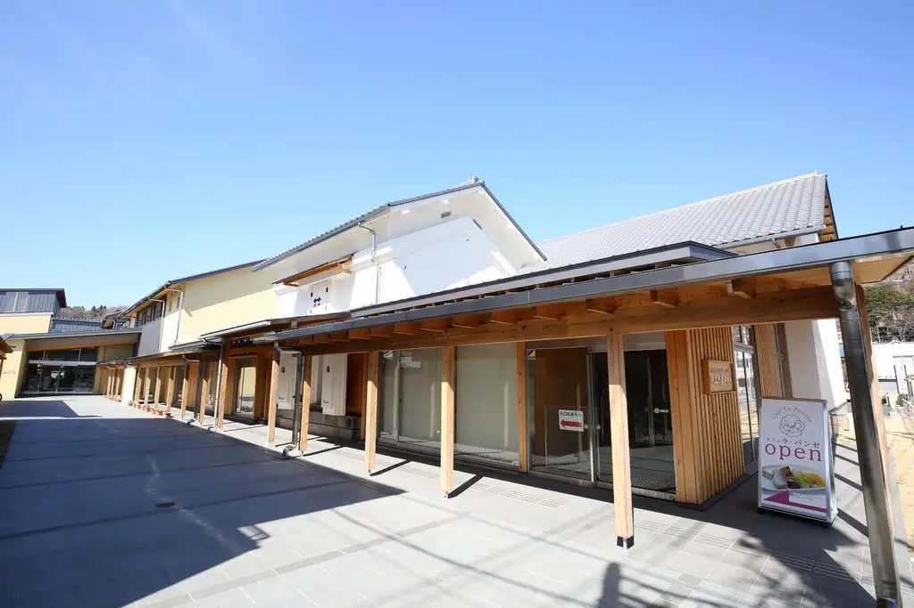
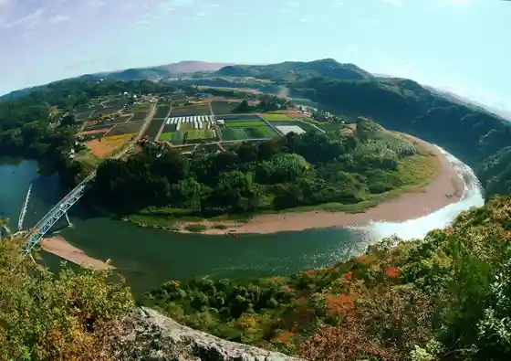
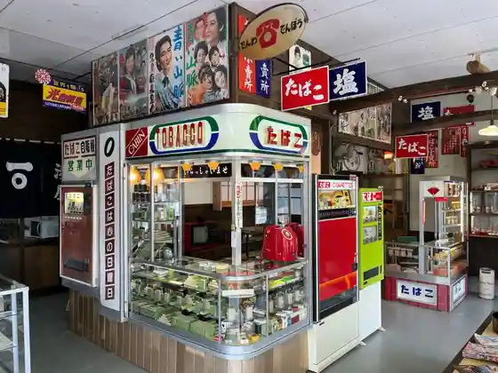

Motegi
Motegi · Tochigi
Motegi
Highlighted on the Tochigi map.

Sights
Motegi Machinaka Bunka Koryu Kan Fumi no Mori Motegi
Kamakura Yama

Yaki Moriyama (Mitsumata Gunsei Chi)
Yakumo Shrine (Motegi)
Motegi Showa Kan

Dai 2 Motegi Showa Kan
Ki no Hana Shizen Sono Hana no Yama